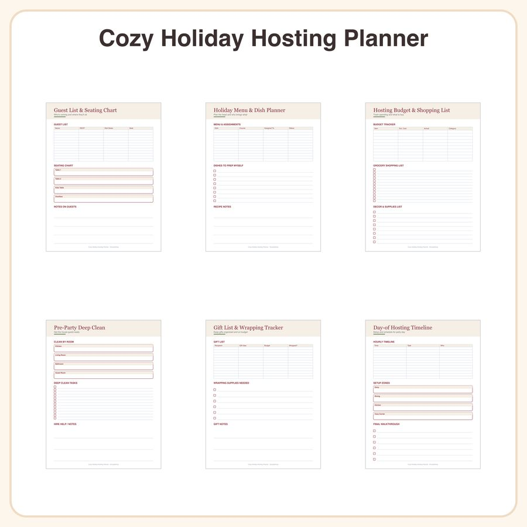

$5.99
View on EtsyHosting the holidays without losing your mind? This planner maps every detail—guests, menu, budget, cleaning, gifts, and timeline—so you can host calmly and actually enjoy the day. What's included (6 planning tools, 18 pages): • Guest list & seating chart tracker (3 pages) • Holiday menu & dish assignment planner (3 pages) • Hosting budget & shopping list (3 pages) • Pre-party deep clean checklist (3 pages) • Gift list & wrapping tracker (3 pages) • Day-of hosting timeline & setup guide (3 pages) Style: warm cranberry-and-sage color accents, elegant serif headers, and hand-drawn holly doodles on clean grid layouts—designed to feel festive but stay easy to read and use. File details: • High-resolution PDF, sized for both US Letter and A4 • Print at home or at a copy shop • Fillable digitally in GoodNotes, Notability, or similar annotation apps, or print and fill by hand How to use: 1. Download the PDF instantly after purchase (no physical item ships) 2. Print the pages you need, or import into your favorite annotation app 3. Fill in your guest count, menu, budget, and to-dos as you plan License: For personal use and small-business use (up to 500 printed/finished units). Please do not resell, share, or redistribute the digital files themselves. Honest note: These designs were created by our shop with the help of AI tools as part of our design process. Questions before you buy? Message us anytime—happy to help you host a calmer holiday! 🍂